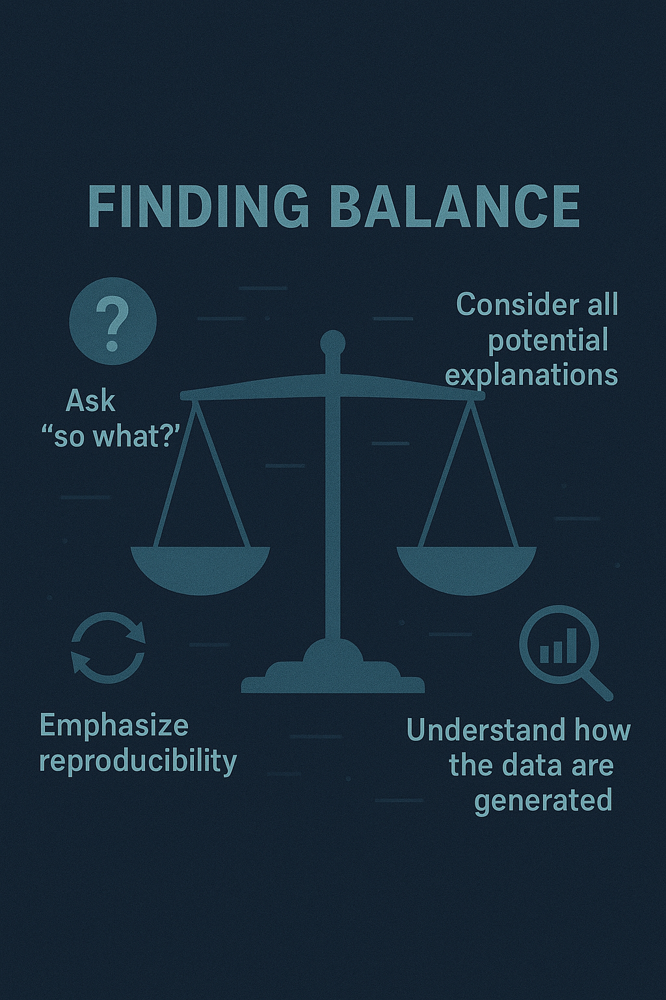

Have you ever run an elegant ML model that landed flat with those who were supposed to use the insights? Do you find yourself deep into building hundreds of features for your model without knowing exactly what they all mean? Do you spend the bulk of your time tweaking your algorithms while aiming for incremental improvements in accuracy? If so, you might be focused more on the “data” aspects of “data science” than the “science” aspects.
Two Foundational Elements of Data Science
“Data Science” contains two essential components, “data” and “science”. The field of Data Science requires holding both components in equilibrium. Data is the raw material molded in the service of Science. While Data is first, Science is no less important. Data is the foundation and Science gives it purpose.
What do we mean by Science? We’re referring specifically to the scientific method as an approach to gain knowledge. It is the process of formulating ideas and hypotheses about the world around us and collecting data to determine the validity of those ideas. By hypotheses we’re not limiting the definition to strict statistical hypothesis tests, but rather the general process of formulating a research question, gathering appropriate data and advancing human knowledge, regardless of the statistical techniques or machine learning algorithms employed. Science, at its core, is about using data to gain insights and understanding about the complex universe we inhabit.
The scientific method has a long history and is generally defined in terms of steps such as these noted in Wikipedia (Scientific Method, 2025) as:
Characterizations (observations, definitions, and measurements of the subject of inquiry)
Hypotheses (theoretical, hypothetical explanations of observations and measurements of the subject)
Predictions (inductive and deductive reasoning from the hypothesis or theory)
Experiments (tests of all of the above)
The relationship between Data and Science is cyclical. Performing good science requires gathering good data, informed by proper experimental design techniques, which in turn requires appropriate analysis and interpretation in the context of the science. And good research (science) often generates more questions than it answers, giving way to the need to gather more data, and so on. As such, data science is more than just confirming hypotheses or generating insights, it becomes the application of the scientific method.
The scientific method should be the scaffold supporting what data scientists do. While data scientists come from a variety of backgrounds, many have more training in computer science than statistical methodology, and have more experience in software tools than they do in executing the scientific method.
In an influential, relevant paper Shmueli (2010) described two major types of statistical modeling, I) explanatory models which attempt to determine causal effects, and II) predictive models which seek accurate predictions. While predictive models can lead to understanding and possible explanatory models, explanatory models tend to be preferred by those seeking more scientific explanations for phenomena.
Data Modeling Culture Versus Algorithmic Culture
Leo Breiman in a famous paper described two paradigms: I) the data modelling approach, which assumes the model that generates the data, and II) the algorithm approach, which relies on flexible methods without making assumptions about an underlying data generating model or how the data are generated. Breiman(2001a) felt that the statistics discipline was missing out on opportunities by focusing more on data modeling approaches and not using algorithmic approaches. He practiced what he preached, developing new algorithmic approaches and encouraging the field to increase its focus on algorithms. For example, he introduced Random Forests, starting a cascade of more algorithmic approaches to modeling (Breiman, 2001b).
This wise counsel from Breiman encouraged those working with data to build more expertise in algorithms, promoting the algorithmic culture as a way to harness the power of new computational techniques. We would equate Breiman’s algorithmic approach with a greater focus on the Data side of Data Science and the data modeling approach with a greater focus on the Science side of Data Science.
Balancing Data and Science
Just as pendulums slowly swing back and forth, so too has the pendulum swung too hard towards predictive accuracy (the Data side) at the expense of contextual interpretation (the Science side) . This pendulum swing is evidenced by the growing demand for explainable ML methods (see Alangariret al. 2023 as an example) . One such method is the use of Shapley values to elicit and rank the most important features in a ML model (see Rozemberczkiet al 2022 for an introduction). It seems ironic that, in the rush to gain model accuracy with sophisticated models containing hundreds of features, end users of the models still want something they can understand and explain. In other words, they still want scientific knowledge and understanding of cause and effect, even for complicated problems.
So what is the best approach from a scientific perspective? Throw as many features into a model that you can think of and see which ones show up to be the most important? Or is there some thought and care that can go into feature selection, considering what might be important given your knowledge of the science behind a problem?
We’re not suggesting that it is bad to include many features in a model. We’re suggesting that considering the context of the problem can provide insight on features that might matter. Of course, we don’t want to jump to conclusions on what we think is important and miss opportunities to learn. We seek to maintain some balance between using our previous knowledge and experience while not increasing the risk of confirmation bias in the feature selection process.
In software engineering, there is a well-known warning: “premature optimisation is the root of all evil”. The same applies in Data Science. Too often, teams rush to optimise models, tuning hyper-parameters, stacking architectures, and searching for marginal gains, before clearly defining the scientific question or validating whether the data and assumptions are appropriate. This tendency leads to models that are mathematically elegant but scientifically ungrounded. Optimisation should follow understanding, not precede it. A model that captures the right question with moderate accuracy is far more valuable than one that optimises the wrong target to perfection. This limitation of models is reflected in the famous aphorism “All models are wrong, but some are useful,” most commonly associated with the British Statistician George Box, who wrote (Box 1976):
“Since all models are wrong, the scientist cannot obtain a”correct” one by excessive elaboration. On the contrary, following William of Occam, he should seek an economical description of natural phenomena. Just as the ability to devise simple but evocative models is the signature of the great scientist, so overelaboration and overparameterisation is often the mark of mediocrity.”
Is it okay to use black box models where the model accuracy is paramount and ignore the explainability of the model? Yes, for some problems. But should we use black box models for all problems? No. The key to being a good data scientist/statistician is to recognize when one provides more value than another and use the best approach for the problem at hand.
So how does one give more attention to the Science side of Data Science? It starts with more attention on the question of interest. It doesn’t matter so much the type of question - whether it is a research question, a business problem to solve, or something sparked by curiosity. And it is often more than a single question. Often, it is not a single question but a series of cascading questions, each one digging deeper to get at the root causes. To manage this complexity effectively, it helps to adopt a modular approach, structuring analytical work into well-defined, interlinked components that mirror the scientific process. Each module focuses on a specific purpose: formulating and refining hypotheses, understanding data provenance and quality, developing and validating models, and translating findings into meaningful actions. Such modularisations keep the process transparent and iterative, prevents premature optimisation, and ensures that model development remains anchored to the underlying scientific inquiry rather than drifting towards technical over-engineering. With this increased attention, we believe sampling methods and experimental design will continue to be fundamental.
Here’s one example loosely based on our work experience. A business executive has some reports that show an increase in turnover at their organization, which is driving up hiring and recruiting costs, making the company less profitable. We find that the turnover is higher for those who are newer to the company, which leads to the question: “Why these new ones?” This leads to an additional hypothesis that perhaps these newer employees are not getting the leadership support they need, which leads to questions about the effectiveness of leadership training programs, which in turn leads to questions around how we measure the effectiveness of training programs. By continuing to ask questions, we can get a more targeted effort at a root cause and thus increase the impact of our work.
With the availability of many algorithms and approaches that are able to process large amounts of data, it can be tempting to gravitate towards them. When teaching analysis/ applied statistics courses, it is important to look beyond the methods and consider the overall aim. There are a set of frameworks that have been around for a while that can be helpful in finding the right balance. One example is PPDAC (Mckayet al. 2000) that emphasises all the steps beyond the modelling part and the importance of considering them all. Using such frameworks can help decide whether a black box approach is suitable in the situation or whether this won’t achieve the overall intended aim.
Finding Balance
So how do we ensure a good balance between Data and Science in Data Science?
One way is to ask “so what” with any analysis that you do and any model that you build. Ideally, you would ask that at the beginning of a project to reduce wasted effort, but it should be clear how the analysis output will be used. And it would not be sufficient to say “so that we can publish the output in a paper”. You have to think about the impact of the analysis. Will it change a decision that is being made? Does it create a new insight that can be acted upon? Does it lead to a process improvement or a new product innovation? Does it lead to a new way of running an organization? Data science that doesn’t lead to some action or insight is just computation for computations sake. Vance et al. (2022) provides additional resources and advice for how to ask good questions.
A second way is to consider the potential explanations and meaning behind any model. Don’t become too enamored with the predictive accuracy of the model (which isn’t inherently a bad thing) at the expense of asking whether there are potential scientific explanations based on the features used in any model. Use a predictive model as a starting point for digging deeper and finding a smaller set of features that provide deeper insight on potential causal relationships to explore.Sometimes a simpler model that is easier to “explain” or one that uses trusted data provides more value than the latest and greatest algorithm.
A third way is continuing emphasis on the reproducibility of the results. Clean code, documentation of results, version control of analysis code and open sharing of the code with its underlying assumptions are best practices to ensure that others can replicate the findings of any data science output. Sassoon (2023) provides additional guidance for ensuring reproducibility and transparency of results.
A final way to find the balance is to better understand how the data are generated. Hoerl (2025) touched on this issue in calling for statisticians to focus more on data quality. We believe this advice to be equally relevant for data scientists. By recognizing the crucial importance of the data generation process, data scientists will better be able to use the right data that matches the problem of interest and push for changes as needed to ensure high quality data.

Conclusions
We encourage data scientists to live up to their name and become experts in both Data and Science. As they find a proper balance between those two areas, their impact and influence will increase and the quality of their rigorous work will stand up to scrutiny and advance human knowledge.
References
Alangari, N., Menai, M. E. B.,Mathkour, H., &Almosallam, I. (2023).Exploring evaluation methods for interpretable machine learning: A survey.Information,14(8), 469.
Box, George (December 1976). “Science and Statistics”. Journal of the American Statistical Association. 71 (356): 791–799. doi:10.1080/01621459.1976.10480949. Retrieved 2025-11-28.
Breiman, L. (2001a). Statistical modeling: The two cultures (with comments and a rejoinder by the author).Statistical Science,16(3), 199-231.
Breiman, L. (2001b). Random forests.Machine Learning,45, 5-32.
Hoerl, R. W. (2025). The future of statistics in an AI era.Quality Engineering. Advance online publication.
Hyde, R. (2009). The fallacy of premature optimization.Ubiquity,2009(February).
MacKay, R. J., & Oldford, R. W. (2000). Scientific method, statistical method and the speed of light.Statistical Science,15(3), 254-278.
Rozemberczki, B., Watson, L., Bayer, P., Yang, H. T., Kiss, O., Nilsson, S., & Sarkar, R. (2022). Theshapleyvalue in machine learning. InThe 31st International Joint Conference on Artificial Intelligence and the 25th European Conference on Artificial Intelligence(pp. 5572-5579). International Joint Conferences on Artificial Intelligence Organization.
Sassoon, I. (2023, November 6). How to ‘open science’: A brief guide to principles and practices.Real World Data Science. https://realworlddatascience.net/foundation-frontiers/posts/2023/11/06/how-to-open-science.html
Scientific method. (2025, November). InWikipedia.
Shmueli, G. (2010). To explain or to predict?Statistical Science,25(3), 289-310.
Vance, E. A., Trumble, I. M., Alzen, J. L., & Smith, H. S. (2022). Asking great questions.Stat,11(1), e471.
- About the authors
- This article was authored by some of our editorial board members. You can find their bios on our team page.
- Copyright and licence
- © 2025 Willis Jensen, Fatemeh Torabi, Monnie McGee, Isabel Sassoon.
: Jensen, Willis. Torabi, Fatemeh. McGee, Monnie. Sassoon, Isabel. “Keeping the Science in Data Science,” Real World Data Science, December 04, 2025. URL